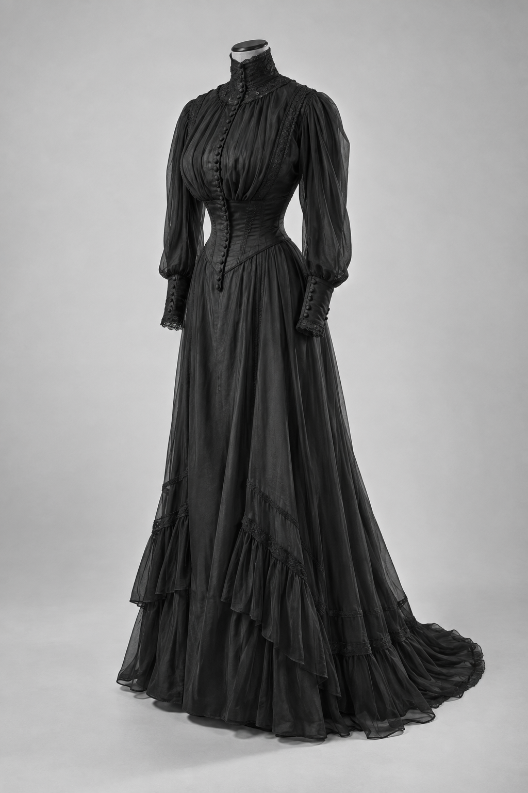
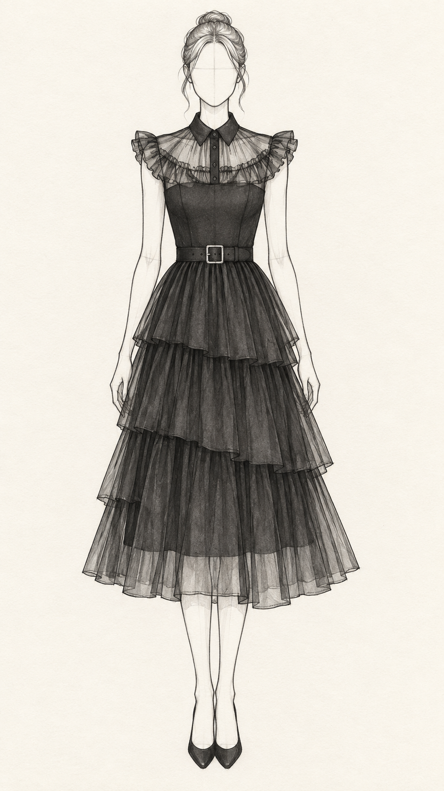
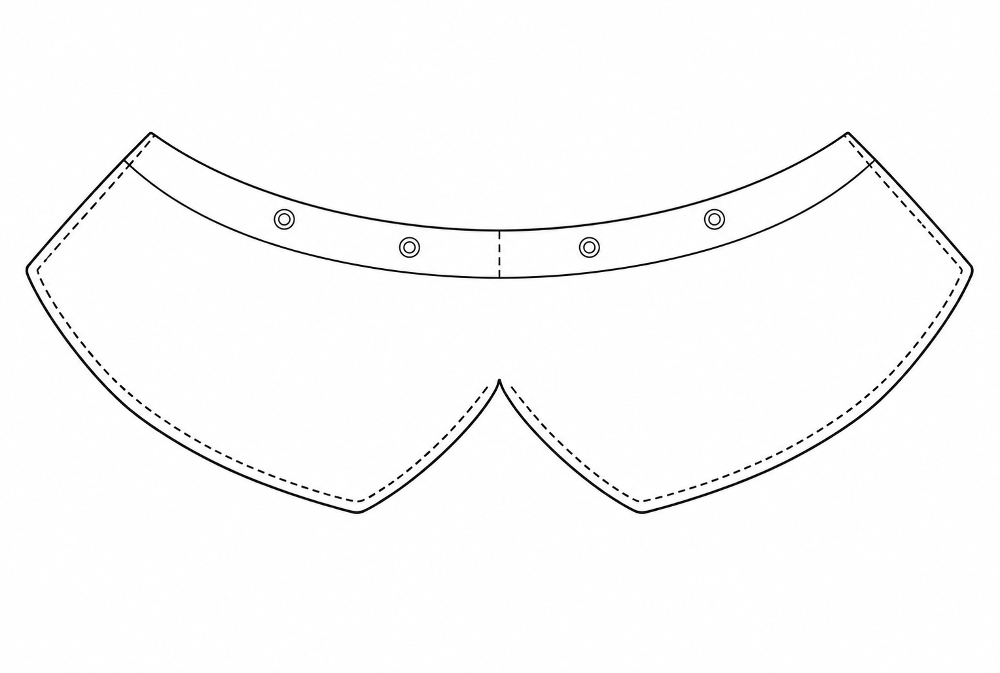

How the folio's graphic system was designed and what each element does. The specimens on this page are drawn by the folio's own stylesheet, at the size they print, so what you see here is what is on the pages.
The measurements of record are in docs/brand-kit.md and the comments in
design-system/deck.css. The reasons are in docs/design-rationale.md. This page is
the walk-through. If the two disagree, the stylesheet wins and this page needs an entry in the ledger at the
foot.
The folio is marked on its content, not its looks. So the graphic system was designed to do one job: make twelve dense A3 pages read as one document, and let a marker find what they are looking for without being told. Every choice below came from that, in this order.
Two families from Google Fonts, loaded by one stylesheet link. Fraunces at weight 900, the display face. PT Serif regular, bold and italic, the text face. There is no style below 12 pt anywhere on a folio page. When a page is crowded, the only fix is to cut words.
Fraunces is a variable "soft" fat face with an optical size axis. The link requests the axis range
opsz 9..144 at weight 900 only, so the browser picks the drawing for the size in use: the
38 pt wordmark gets the high-contrast display cut, and the 13 pt plate numbers get a sturdier one. It is
used in exactly three places: the wordmark, the section titles, and the plate-number roundels. It is never
used for a sentence.
How it works. The wordmark is .wordmark: Fraunces, weight 900, 38 pt,
line-height 0.92, with the 30 mm slate rule under it. Section titles are .display with an
inline 19 pt size. The roundel is .plate-num, a 7 mm circle filled with the chapter's field
colour and ringed in ink. Filled roundels number someone else's picture. Outlined callout dots, the other
numbered-circle idiom, point into the student's own drawings.
PT Serif has a larger body than Times at the same point size, so 12 pt PT Serif clears the NESA floor with room to spare. Every word a marker reads is set in it, including the section name in the masthead.
How it works. The lead-in word of the standfirst is Fraunces inline, so the block opens in the masthead's voice and the sentence continues in PT Serif. The dateline's line break is authored, never wrapped: only the longest section name breaks, and always at the same word. The ampersand belongs to the period titles, which are the folio's own naming. NESA section names always use "and".
| Style | Face | Size and leading | Where |
|---|---|---|---|
| Wordmark | Fraunces 900 | 38 pt, 0.92 | Masthead, all twelve pages, spine, swing tag |
| Section title | Fraunces 900 | 19 pt, 1.05 | Opening display line of each page section |
| Plate number | Fraunces 900 | 13 pt in a 7 mm roundel | Source plate captions, pages 1 to 2 |
| Standfirst, closing statement | PT Serif | 16 pt, 1.4 | Pages 1, 5 and 12 |
| Body | PT Serif | 12.5 pt, 1.3 | Running text |
| Tables, captions, keys, labels, foot | PT Serif | 12 pt, 1.3 | Everything else |
| Dateline | PT Serif bold caps, italic | 12 pt, 0.11 em tracking | Masthead area block |
The swing tag reverse reproduced on page 7 is artwork at 1 : 1 and is the only place smaller type appears.
One ornament for the whole set: a nightshade flower, drawn as linework in school purple. Nightshade is the character's flower and it reads as a small dark thing at arm's length, which is the whole reason it was chosen over a monogram. It is the only decorative element the folio has.
The artwork. The mark is one SVG, assets/house-mark.svg: five petals as an
outline with a vein in each and a stamen ring, all stroked in school purple. It carries no bars of its own.
The lines either side of it are always the page's CSS stitch rows, so the mark cannot draw a line that
misses them. The viewBox is cropped to the drawing, 480 x 457 units, so the box is the drawing and nothing
more. Anything that needs the mark links this file; there is no other copy.
How it works. The mark is sized by its ink, not its file. .mark-band
sets the image height from --mark-h and lets the width follow: 6 mm in the foot, 10 mm in the
ornamented rule. The stamen ring sits 37.25 units below the centre of the 457 unit crop, so the rule lifts the image
by 37.25 / 457 of its height and the ring sits on the axis of the stitch rows either side. The foot does the
same sum, then adds a drop of 0.0625 em, one pixel at 12 pt, to land the ring on the type's optical centre. The air
either side is --mark-space, 2.5 mm, which is 2.4 word spaces of 12 pt PT Serif: enough that the
mark separates the two halves of the line rather than reading as punctuation inside it.
Where it does not appear. Not in tables, not beside headings, not on the product labels, not as a watermark. It appears in the foot, on the two statement rules, on the binder spine and on the swing tag, and nowhere else. A device used everywhere marks nothing.
The folio has three rules and each one means something. The masthead below is the real component, at 297 mm, so the double rule and the 60 degree chapter transition can be read together.
The hem. A 0.53 mm edge over a row of topstitching, 1.4 mm apart, full width of the
content box, in school purple. It separates identity from content on every page, and it is read as cloth:
the cream band is a panel, the heavy line its folded edge, the row beneath it the stitch that holds the
hem. The stitch is one SVG tile, 2.5 mm of 0.35 mm thread with round ends and a 1 mm gap, repeated with
background-repeat: round so every row starts and ends on a whole stitch. The edge is 0.53 mm
rather than a rounder 0.4 mm because 0.4 mm is 1.51 px on a 1x screen and snapped to one row on half the
pages, which collapsed the old thick-over-thin pair to a doubled hairline. The stitch is exempt from that
sum: it reads by its length, 9.4 px at 1x, not by its weight.
The running foot's rule. The same stitch row, alone, over the foot on every page, and either side of the house mark on the statement rules and the swing tag.
The chapter transition. The cream band ends in a 60 degree edge after the wordmark and the area field begins on the same edge. The slant is derived from the band height, so the angle holds if the band is retuned. The area block is 122 mm wide, constrained at both ends: wider and the wordmark is clipped, narrower and the longest section name collides with the slant. The section name's cap top lands within 0.02 mm of the wordmark's across the seam, so the two read as one line of type interrupted by the transition.
The stub rule. 60 mm by 1.1 mm in the chapter's border colour, under the opening line on pages 5 and 12. The one place a chapter colour touches a title, and it touches it as a rule, not as type.
Every source image and sketch sits in a double-ruled plate with four corner dots in the chapter colour, the way period books mounted engravings. The frame does the historical work so a mixed set of photographs reads as one considered set.



How it works. .plate is a 0.4 mm outer frame with a 0.12 mm inner frame
drawn 1.8 mm inside it by a pseudo-element, and four 1.6 mm dots in the chapter's accent colour lifted above
the image. Production drawings on pages 6 to 8 sit in a plain 0.3 mm box with no dots, because NESA asks
for scaled line drawings with a key and the designated second colour only, and decorative framing pulls
against that.
The structural colours, four section colourways, and rules for their use are shown below. Section swatches and school purple use the live stylesheet; their hex values are read from the computed style.
The garment is black. The page is built from ink, paper, and cream, with two brand colours sampled from the garment itself. Slate, from the tulle where it catches light, is the rule under the wordmark. Wine, from the jet beads under warm light, is the NESA-designated second colour for pattern modifications on pages 6 to 8. Slate and Wine arrive as props so the preview can re-sample them; the values shown are the defaults. School purple colours the house mark and its divider lines.
slatewineEach NESA section is a chapter, and each chapter has a colourway held at the same value as the other three
so the four read as one family. A page turn shows the section change at the masthead before a word is read.
The five tokens in each are field, border, accent, tint, and emph; the swatches below are filled from the
--area-* tokens the pages themselves use.
The contrast ratios are measured against paper #FEFBFC and are written in the
stylesheet beside each emph value. If an accent is ever re-sampled, re-derive its emph and re-measure.
One colour is chosen per chapter, the border. The other four are made from it, so a colourway is one decision and four arithmetic steps.
color-mix(in srgb, <accent> 80%,
#1A1A1A).The accents are graphic tones and measure under 4.5 : 1 on paper. The design uses 4.5 : 1 as its minimum for coloured text on paper. 80 per cent is the mix
at which all four emph values clear 4.5 : 1 with margin while the hue is still plainly the chapter's. Every
value is written into deck.css as a literal, not as a color-mix() call, so it
survives without that function and so a marker's contrast check lands on a number that is in the file.
Area tokens are fill and rule colours, never text colours. Text over field, tint, or a border-coloured table header is always ink. Emph is the only token that may colour type, and its one use is the last clause of the closing statement on page 12. Recheck text contrast whenever these colours change.
The tulle, the collar, the closure, the band, the raw edges and the way each tier is gathered and set were all decided by an experiment on these pages. That is the argument this ledger was kept to make.
The one exception, as it sets. A closing clause in Wine emph, 16 pt, at 6.80 : 1 on paper. It reads in the chapter's own colour, the same family as the rule stub, the table headings and the plate dots around it, rather than introducing a hue the folio uses nowhere else.
Per page, the area class recolours exactly these components and nothing else.
| Component | Token | Where |
|---|---|---|
| Masthead chapter-transition block | field | All twelve pages |
| Table header rows | border | Wherever a table sets |
| Table cells | tint | Wherever a table sets |
| Plate corner dots | accent | Pages 1 to 5 |
| Section-title stub rules | border | Pages 5 and 12 |
| Closing clause | emph | Page 12 only |
Kept in brand colours, not area colours: the slate rule under the wordmark, the house mark and its divider lines in school purple, and the wine that marks pattern modifications on pages 6 to 8. Production drawings and pattern pieces stay pure ink linework.
The cream band ends after the wordmark in a 60 degree clipped edge and the area field begins on that same
edge, so the two fills meet along one line with no paper between. The field is the only place a chapter
colour touches the masthead. These four are the real .masthead2 at 297 mm, one per area,
drawn by deck.css.
Slate, Bone, Ash, Wine. The dateline is ink on field on every page. The section name is NESA's, verbatim; only the longest one breaks, and its break is authored. The ampersand in Trials & Proofs is the folio's own title and is not NESA-facing.
The design system is not finished. This is the ledger of what changed after the sections above were written, newest first. When you change an element, add an entry here and update the section it belongs to. One entry per change: the date, what changed, why, and which files carry it.
The three label boxes on page 7 had dropped to words only, and their fibre lines and care notes had drifted from the sewn labels. The boxes are now the label sheet's own markup: wordmark at 15 pt, piece, fibre, the five symbols at 6.5 mm, the note and the origin at 12 pt. Measured on the preview the block runs 328 to 390 mm and the content box closes at 400 mm, so the row fits without cutting copy.
The mirror prop asked the printer to remember a setting the sheet could only report after the fact. The run is now printed twice: sheet 1 as it reads, for a printable fabric sheet or a label printer, and sheet 2 mirrored, for iron-on transfer paper. Each sheet fixes its own orientation and says so in its banner, and the notes sheet presents the two approaches side by side rather than three routes and a switch.
The three sewn labels ran different care sentences and the sheet assumed iron-on transfer, with the notes pointing at a swing tag the folio no longer shows. Every label now runs wordmark, piece, fibre, the five care symbols, a one-line note and the origin. The symbols are the swing tag's drawing at 5.5 mm on the label and 6.5 mm on page 7, and the label cell is the finished 71 x 48 mm patch, so the sheet prints as it reads for a fabric sheet or a label printer and mirrors only for transfer paper.
The swatches, token derivation, contrast ratios, component mapping, and four masthead specimens now sit here. School purple is included. The separate colour page and preview option have been removed.
The swatch sheet in explorations still called the areas Rose, Sage and Marigold, had no emph token and drew its masthead at screen scale from its own copy of the values. The new page links deck.css, fills every chip from the live token and reads the hex back from the computed style, so it cannot disagree with the pages. The masthead exploration was one rejected option and is gone with the folder.
The folio argued from three museum dresses to a 2022 character. The brief runs the other way: the 2022 dance dress is the source and the three periods are the corrections. Pages 1 to 5 now start from that dress at face value. The detachable collar was too small a change to carry the creativity criterion, so the tiered skirt is now a separate overskirt on a hooked band and the costume converts between the dance and the school scene. Tiers regraded 18, 26, 34 cm to cover the 68 cm skirt; Experiment 8 now tests the band closure. Plate 1 is the 2022 dress and the historical plates moved to 2 to 4.
The four generated dress images are 1024 x 1536 px. In the 84mm plate the inner rectangle measured 56.1 x 90.4mm, so the image sat 3mm short at top and bottom. The plate content height is now 77.8mm, which gives an inner rectangle of 56.1 x 84.2mm and saves 6.2mm on the page.
The reasons behind the graphic system lived in three places: the brand kit, the design rationale and the stylesheet comments. None of them showed the elements. This page draws them with the live stylesheet so the explanation and the artwork cannot drift apart.